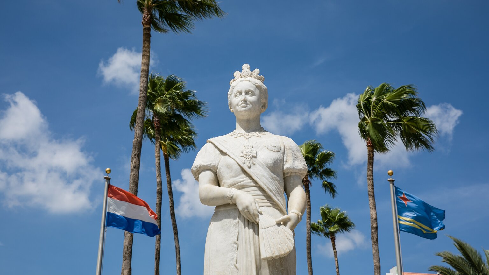

Historia
El pasado multicultural de Aruba se refleja en nuestra cocina, arquitectura, arte, tradiciones, calidez y amabilidad. Lo que comenzó como un puesto de pesca para los amerindios ha pasado por dominios españoles y neerlandeses durante los siglos y, ahora, es un país diverso que forma parte del Reino de los Países Bajos.
Primeros Habitantes
Los primeros habitantes conocidos de la isla fueron los caquetíos, del pueblo arahuaco de Venezuela. Durante el período Precerámico andino, de 2500 a. C. a 1000 d. C., este pueblo seminómada cazaba, pescaba y recolectaba alimentos, y dependía mayormente del mar para vivir. Crearon herramientas a partir de hojuelas de piedras y caracoles, y vivían en pequeños grupos familiares en las áreas costeras hoy conocidas como Malmok y Palm Beach. A comienzos del período Cerámico, de 1000 d. C. a 1515 d. C., los nativos formaron cinco pueblos grandes y comenzaron a producir maíz y yuca. En el Museo arqueológico de Aruba se pueden apreciar versiones en escala de estos pueblos amerindios, así como representaciones de una vivienda amerindia. El museo también cuenta con restos de urnas de cerámica, cerámica común y joyería elaboradas por los caquetíos, y algunos de estos elementos son del año 1000 d. C. Los dibujos y las figuras talladas en las rocas creadas por los caquetíos han resistido el paso del tiempo y se pueden apreciar en la cueva Fontein, en el Parque Nacional de Arikok y en las formaciones rocosas de Ayo. Estas pinturas sugieren que los caquetíos pueden haber llegado a la isla huyendo de los ataques de los caribes, pueblo originario del norte de América del Sur. Los caquetíos aún vivían en la isla cuando llegaron los primeros exploradores españoles.

Los Españoles
En 1499, el explorador español Alonso Ojeda llegó a Aruba, y comenzó la colonización de la isla por parte de los españoles. Debido a las pocas precipitaciones en la isla, los colonizadores no creyeron que Aruba fuera un buen lugar para la plantación de cultivos. En 1513, los españoles esclavizaron a muchos de los caquetíos y los enviaron a La Española, a trabajar en plantaciones y minas. Algunos nativos volvieron a Aruba en 1515 y fueron reclutados como trabajadores para ganado y para cría de caballos. Aproximadamente nueve años después de que Alonso de Ojeda llegara a Aruba, la Corona española lo designó primer gobernador de la isla. Aruba permaneció bajo dominio español durante 137 años.
Los Neerlandeses
Debido a la ubicación estratégica de Aruba, los neerlandeses ocuparon la isla en 1636 para proteger su suministro de sal del continente sudamericano, al mismo tiempo que se aseguraron una base naval en el Caribe durante la Guerra de los Ochenta Años con España. Los neerlandeses reclutaron a los caquetíos para construir granjas y criar ganado para carne, que luego se vendería y enviaría a otras islas. Durante las guerras napoleónicas, los ingleses invadieron Aruba y tomaron el control, pero los neerlandeses lo recuperaron en 1816. Aruba se convirtió oficialmente en parte de las Antillas Neerlandesas en 1845.
Aruba se separó de las Antillas Neerlandesas en 1986, una victoria en gran parte peleada por el activista político y héroe local Betico Croes. En este proceso de «status aparte», Aruba obtuvo su independencia como país autónomo del Reino de los Países Bajos. Inicialmente, el pan de Aruba era independizarse por completo. Sin embargo, en 1990, Aruba decidió posponer indefinidamente el plan y, en 1995, el pedido de total independencia fue completamente revocado.
Aruba hoy
Hoy en día, Aruba sigue formando parte del Reino de los Países Bajos. En cuestiones de relaciones internacionales y defensa nacional, Aruba aún está bajo control del Reino de los Países Bajos, pero, en lo que respecta a asuntos internos (leyes, políticas y moneda), la administración está a cargo del gobierno de Aruba. Aruba es un verdadero crisol de razas, con más de 100 nacionalidades representadas en su población de más de 112.000 habitantes. Parte de esta diversidad puede observarse en la cantidad de idiomas que un habitante promedio puede hablar, entre los que se incluyen holandés, papiamento (la lengua nativa), inglés y español. Los pobladores de Aruba disfrutan de una economía saludable y, gracias al turismo y a un excelente sistema educativo, Aruba tiene una tasa de desempleo muy baja.